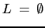

The definition of protocols of interfaces of components is not mandatory. If a interface of a component does not define a protocol one usually wants to check component interoperability anyway. For those cases in which there is no explicitly defined protocol the PCM assumes a trivial protocol. Figure 3.12 shows an example of a trivial protocol, that is implicitly assumed. The trivial protocol allows service calls in arbitrary orders.

|
If a component does not define an explicit protocol for one of its interfaces, the interoperability check can be done in the same way like described in section 3.2.6.1 using the trivial protocol.
Provided component types do not make a mandatory definition of their required interfaces. If a interoperability check for such a component type has to be performed, one assumes exactly one interface. This interface is empty. The interface defines no services and a protocol, who's accepted language is empty ( ). The usual interoperability check can be used for provided component types, too.